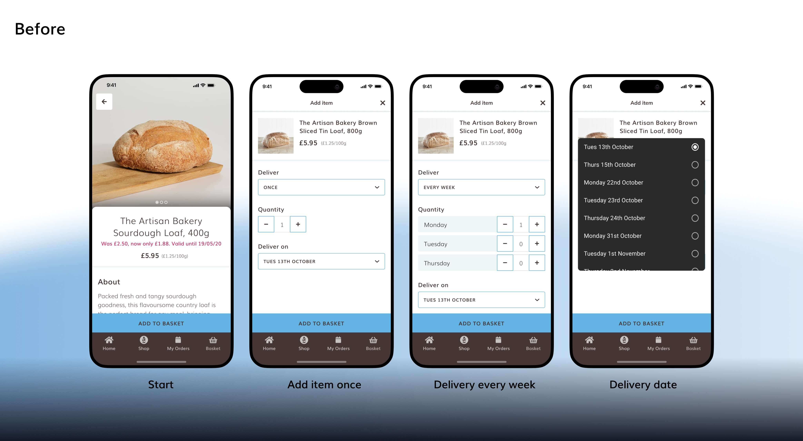
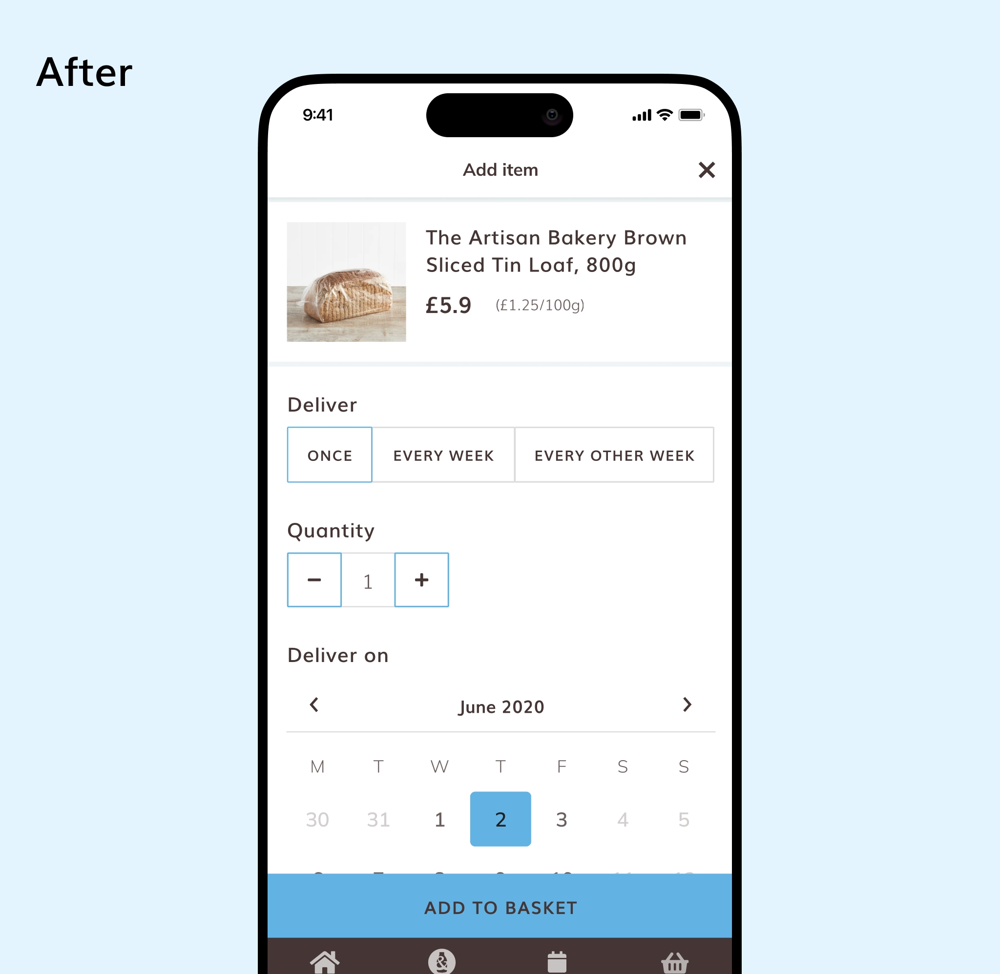
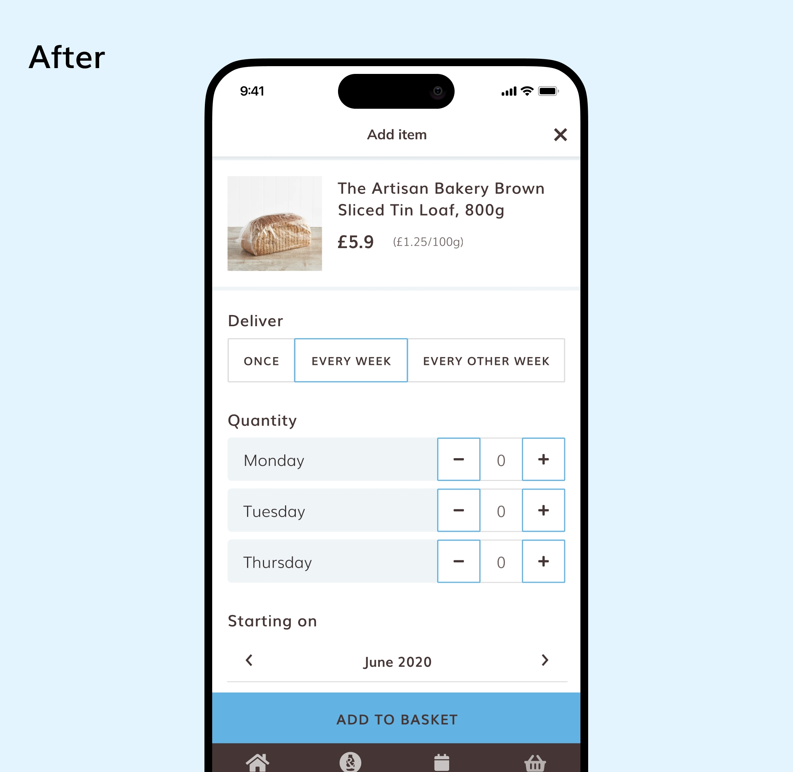
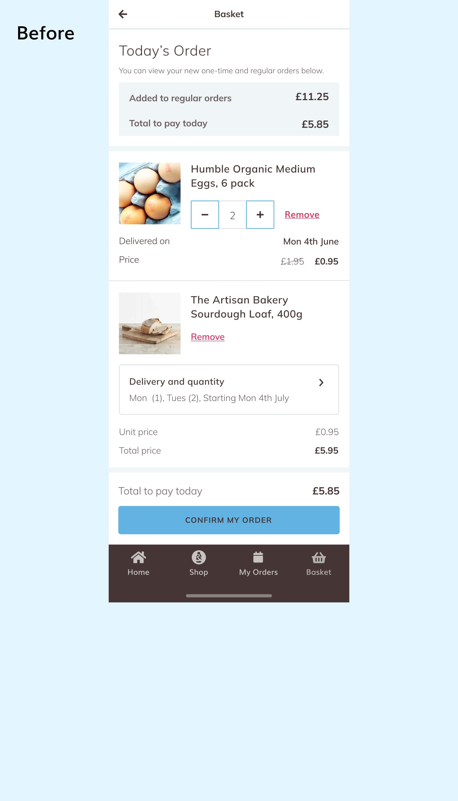
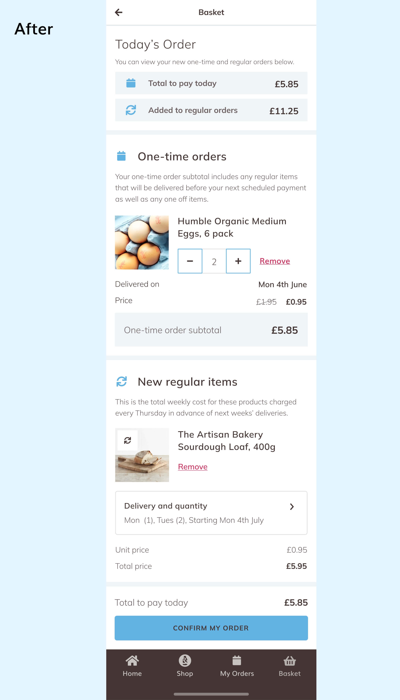
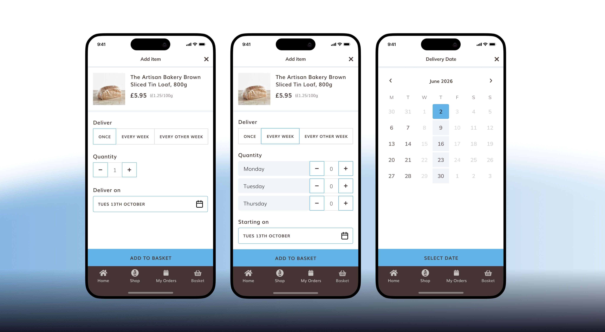
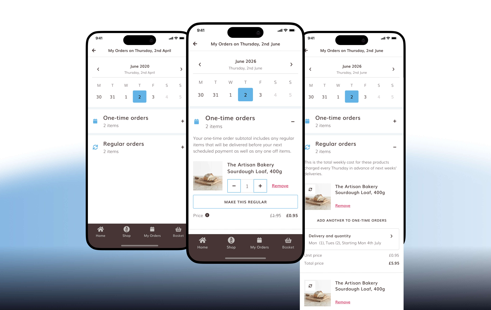

Clarity for App Grocery Orders
Milk & More is a popular UK grocery delivery service built around convenience and fresh produce. Friendly neighbourhood milkmen deliver customers’ orders, either as one-offs or as subscriptions.

Product Design (me), Product Manager, Engineer
Figma, Mixpanel, Lyssna
7 Weeks
The Problem
Users were placing orders in the wrong format, one-off instead of repeating or the other way round. The Add to Basket modal used a select box that defaulted to one-off, which hid the other options.
Research & Insights
I led the app redesign and, following launch, drove multiple rounds of optimisation across key areas of the experience, including this project.
- 19% of order-related support tickets were about unintended orders in the wrong format. Staff were manually switching orders for customers. I scoped that out of this release to keep it focused, and picked it up in the next project, the My Orders flow.
- App Store reviews raised the same issue
- Mixpanel recordings showed hesitation and back-and-forth in the ordering flow and large delays on selecting a date
- Mixpanel data showed a noticeable drop-off during the ordering process
I also reviewed the personas and audited other UK grocery apps to see how they handled basket setup, delivery dates and repeat schedules. The personas were developed from insights gathered during stakeholder interviews, which helped identify key user needs, behaviours and pain points.
Ideation & Strategy
The goal was to make the choice between one-off and repeating orders clear, without making the flow more complicated. I agreed with the engineer that the toggle and date button could be built from existing components, and with the PM to prioritise ordering mistakes ahead of the My Orders flow.

Before: Hidden options and unfamiliar UI.
1. A visible toggle replaces the select box.
The old default hid the repeat option, so users never saw it. Both choices are now visible up front.
2. The date field shows when an order repeats.
A standard date picker gave no hint that orders could recur. The new date selection makes the delivery pattern clear and should speed up date selection by using a familiar format.

New: One-off order

New: Repeated order
Note: Since this is a milk delivery service, items are only delivered on specific days, Mon, Wed and Thursday in this example. This is explained to users on unrelated screens.
3. The basket groups one-off and repeating items.
Headings, icons and helper text let users understand what they’re getting at a glance.

New: One-off order

New: Repeated order
Design & Testing
I built the final UI using the existing design system, then tested a prototype through Lyssna with eight participants per test. The testing was qualitative, helping me find points of confusion rather than statistically validating the design.
Add to basket, round 1: calendar picker
Task: set up an order repeating every other week on Friday. All testers understood the order type, but 2 of 8 skipped the final step of selecting a date on the calendar.
Add to basket, round 2: making date clear

Final version
I replaced the calendar with a button stating in clear English “Starting on: Tues 13th October”, this button opens a calendar in a separate modal. Testers moved through the flow smoothly and understood their order.
Basket: first-click test
Task: remove the repeating order items. 8 of 8 testers succeeded.
Outcome
I handed over the final designs to the engineer using documentation, design system updates and a prototype.
- Subscription-related support tickets decreased by 23%
- Cart abandonment fell from 77% to 69%, an 8 percentage point reduction, measured in Mixpanel over 3 months after release.
- 8 of 8 testers removed repeating items from the basket on the first click
The results suggest that a clearer choice between one-off and repeating orders reduced ordering mistakes and helped more users complete their orders.
I applied this in my next project, a new flow for browsing and editing orders (preview below).

New flow for my order
What I Learnt
Small UX decisions can have a big impact. Hiding an important choice in a dropdown or using unclear terminology led to real problems for users, and my first fix wasn’t enough: testing showed the calendar’s start date still caused mis-clicks until I changed it to a button.